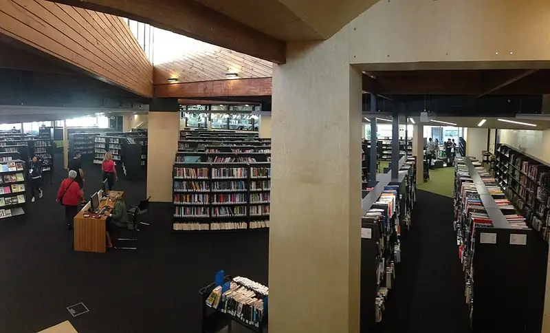

Balwyn Library
Balwyn Library is a library in Balwyn, in the Boroondara City Council area, best for little ones and primary-school kids. Balwyn Shopping Centre/Whitehorse Rd #48 (tram) is a 2-minute walk away and the nearest public toilet is about 1 m away with a baby change table. Opening hours: opening_hours: Mo-Tu 10:00-18:00; We 10:00-21:00; Th-Fr 10:00-18:00; Sa 10:00-17:00; Su 13:00-17:00.


Quick facts
- Opening hours
- Mon–Tue 10am–6pm, Wed 10am–9pm, Thu–Fri 10am–6pm, Sat 10am–5pm, Sun 1pm–5pm
- Address
- 336 Whitehorse Road, Balwyn, VIC 3103
- Phone
- +61 3 9278 4666
- Toilets
- 1 m away, baby change, accessible
- Public transport
- Balwyn Shopping Centre/Whitehorse Rd #48, tram (routes 109), 2 min walk
This page has basic info from the map: name, location and type. We have not checked the details yet. Know this place? Tell us.
Details
- Opening hours
- opening_hours: Mo-Tu 10:00-18:00; We 10:00-21:00; Th-Fr 10:00-18:00; Sa 10:00-17:00; Su 13:00-17:00 (OpenStreetMap)
- Phone
- +61 3 9278 4666 (OpenStreetMap)
- Address
- 336 Whitehorse Road, Balwyn, VIC 3103 (OpenStreetMap)
Questions parents ask
- What are the opening hours of Balwyn Library?
- Balwyn Library is open Mon–Tue 10am–6pm, Wed 10am–9pm, Thu–Fri 10am–6pm, Sat 10am–5pm, Sun 1pm–5pm. Hours can change on public holidays, so check before you go.
- Where is Balwyn Library?
- Balwyn Library is in Balwyn, Victoria, at 336 Whitehorse Road, Balwyn, VIC 3103.
- Is Balwyn Library free?
- Yes. It is a public library, free to visit.
- Are there toilets at Balwyn Library?
- The nearest public toilet is about 1 m away, with a baby change table.
- How do I get to Balwyn Library by public transport?
- The closest stop is Balwyn Shopping Centre/Whitehorse Rd #48 (routes 109), a 2-minute walk.
- What is the phone number for Balwyn Library?
- Call Balwyn Library on +61 3 9278 4666.
Nearby places
- McDonald's
Cafe or restaurant · BalwynToilet nearbyTram 2 min walk
- Subway
Cafe or restaurant · BalwynToilet nearbyTram 1 min walk
- Evergreen Reserve
Park · BalwynToilet nearbyFreeTram 4 min walk
- Playground at Evergreen Reserve
Playground · BalwynToilet nearbyFreeTram 4 min walk
- Playground at Balwyn Community Centre Reserve
Playground · Surrey HillsToilet nearbyFreeTram 1 min walk
- Balwyn Community Centre Reserve
Park · Surrey HillsToilet nearbyFreeTram 2 min walk
- Boroondara Sports Complex
Pool or water play · Balwyn NorthBus 2 min walk